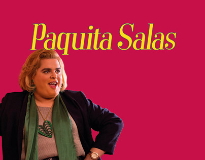

Paquita Salas es una serie española dirigida y guionizada por Javier Calvo y Javier Ambrossi. Se trata de una serie cómica rodada como falso documental de la productora Estudios Buendía (formada por Atresmedia y Telefónica), que se estrenó a través de la plataforma Flooxer (Atresmedia). Debido a la buena aceptación que tuvo su preestreno, la serie también se emitió en el canal Neox. Desde octubre de 2017, Netflix posee los derechos exclusivos de la serie, desapareciendo de Flooxer.
